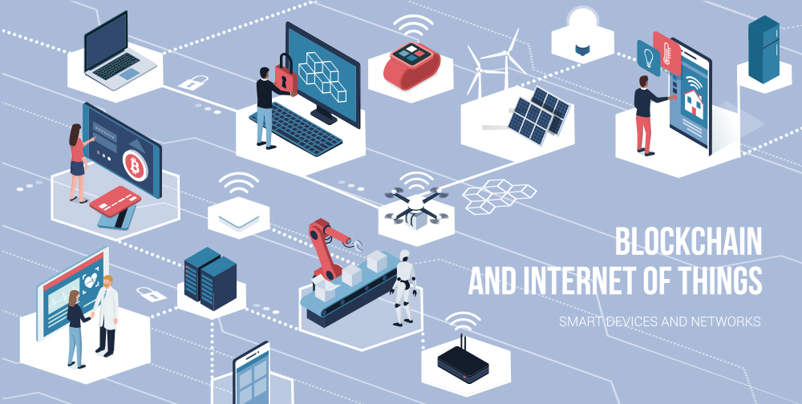

와 제 롤모델이 잡스에요!!! 아이폰 첫 출시되고 나서부터 계속 아이폰 쓰고 있는데 잡스가 너무 그리워요ㅠㅠ 지금은 돈만 벌려고 하는 것 같아서 디자인 발전도 없고ㅠㅠ와 제 롤모델이 잡스에요!!! 아이폰 첫 출시되고 나서부터 계속 아이폰 쓰고 있는데 잡스가 너무 그리워요ㅠㅠ 지금은 돈만 벌려고 하는 것 같아서 디자인 발전도 없고ㅠㅠ와 제 롤모델이 잡스에요!!! 아이폰 첫 출시되고 나서부터 계속 아이폰 쓰고 있는데 잡스가 너무 그리워요ㅠㅠ 지금은 돈만 벌려고 하는 것 같아서 디자인 발전도 없고ㅠㅠ와 제 롤모델이 잡스에요!!! 아이폰 첫 출시되고 나서부터 계속 아이폰 쓰고 있는데 잡스가 너무 그리워요ㅠㅠ 지금은 돈만 벌려고 하는 것 같아서 디자인 발전도 없고ㅠㅠ와 제 롤모델이 잡스에요!!! 아이폰 첫 출시되고 나서부터 계속 아이폰 쓰고 있는데 잡스가 너무 그리워요ㅠㅠ 지금은 돈만 벌려고 하는 것 같아서 디자인 발전도 없고ㅠㅠ
Market Report
Tech holds promise for logistics, but patience required
Tech holds promise for logistics, but patience required
By Peter Tirschwell,
executive director at IHS Markit
Unquestionably, a wave of technology innovation is rolling across the transportation and logistics space, forcing literally every firm to take a hard look not just at technology but where the impact leaves it competitively. And, ultimately, that is what all this change amounts to: who will be best positioned to profitably offer the services customers demand and who alternatively will be rendered obsolete and fade away.
It’s an exciting but risky time. Because tech innovation isn’t native to incumbent players, the risks of a wrong decision are inherently greater and are compounded by the accelerating pace of development and the increasing presence of tech-native players asserting themselves in many segments of the market.
“I am very excited about the pace of technology development in our industry. It’s a renaissance, an opportunity to develop something we haven’t had in our space before,” Jon Slangerup, CEO of American Global Logistics, told the inaugural JOC Logistics Technology Conference in Las Vegas in late October. “The level of innovation that is occurring is mind boggling. It comes with confusion, but it comes with incredible promise in the marketplace.”
Tech conference — separating hype from reality
The goal we set out for ourselves in Las Vegas was to attempt to separate hype from reality in logistics technology, an area swelling with startups flush with venture capital cash but where the actual impact is, even today, more difficult to see.
The discussions around blockchain were a case in point. A technology that a year ago was touted as the solution to all inefficiency is moving forward at what can only be described as a snail’s pace. As Randy Lawson, senior technology analyst for JOC parent company IHS Markit, told the conference, blockchain is making headway in a number of areas including remittances and over-the-counter trading, and it is, of course, the foundation of bitcoin trading.
But it’s encountering headwinds in this market. “We do need to get the other carriers on the platform. Without that network, we don’t have a product,” the IBM lead for TradeLens, the IBM-Maersk joint venture bringing blockchain to shipping documentation and visibility, told CoinDesk earlier in October.
Whether other carriers will share data with a competitor without a stake in the business, however, is unclear, given the historically high level of distrust among container carriers. Some have said that to be successful the adaption of any new technology needs to be driven by customers, not vendors.
This recalls how the Big 3 automakers forced vendors to submit invoices via electronic data interchange (EDI), providing a major boost to that technology. That’s why potentially the biggest blockchain development this year was the Sept. 25 announcement by the big agribusiness players — Archer Daniels Midland, Bunge, Cargill, and Louis Dreyfus — that they will embark on an ambitious collaboration “to standardize and digitize global agricultural shipping transactions for the benefit of the entire industry.”
Participants in a blockchain panel in Las Vegas were asked to look 10 years out and guess at the level of blockchain adoption in this market. The response was unenthusiastic, with most saying it would be limited to specialized cargoes or scenarios but would unlikely be used universally.
That said, large players such as forwarder BDP International see promise in the technology, having investigated it this year and concluding that in regard to digitizing bills of lading, it could hold considerable promise. BDP is engaged in a proof of concept with the blockchain startup CargoX that was described at the conference.
While blockchain inches ahead, other tech progresses more quickly
But if blockchain is inching forward, other developments are progressing more quickly. Among them is the aggregation of multiple data sets that are being collected simultaneously through application programming interfaces (APIs) and put to use in new ways that enable artificial intelligence (AI). This is core to the interest of startups such as project44 and Crux Systems, which are figuring out ways of bringing data sets together to unearth new value for supply chains. That, in turn, raises new questions about data quality.
“EDI isn’t going away any time soon, but there will be an opportunity to leverage more sources of information via web services or APIs, allowing you to get data in a more real-time way, and that is opening up more possibilities like machine learning,” Jason Kerner, vice president of solutions engineering at project44, told the JOC Logistics Technology Conference. He said that in the ocean container space it’s possible to tap into data from AIS ship positioning, traditional carrier EDI messages, and terminal operating systems, which sometimes conflict with each other, “but if you can leverage multiple sources of data and use logic to get rid of the garbage, you can begin to get really interesting information” related to visibility, he said.
But if there is an overall point, it’s that technology-led transformation is coming. It just isn’t here yet. Only a handful of organizations at this point are creating value from AI or machine learning, and fewer still from blockchain. Much more will come.
-
Great
322
-
Like
322
-
Sad
322
-
So-so
322
-
Angry
322